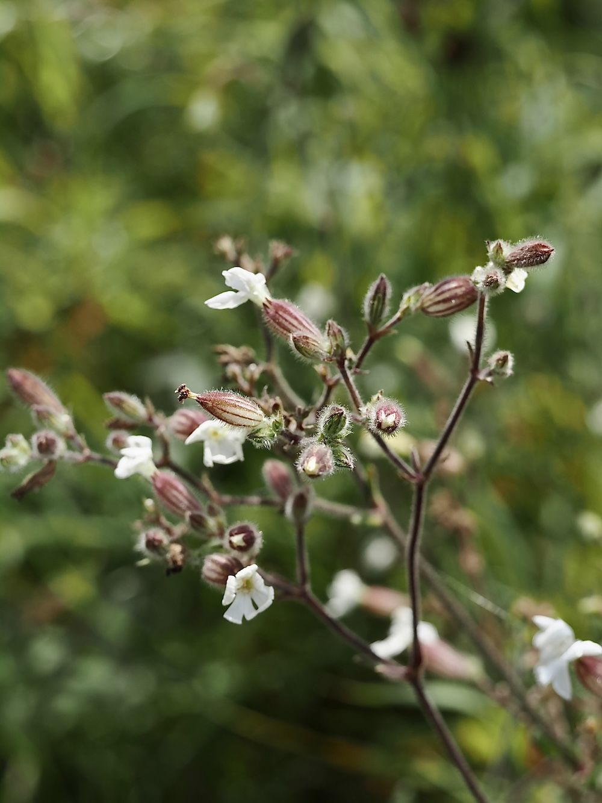

Die Nachtschwester der Roten Lichtnelke — duftet nur, wenn die Sonne weg ist.


Ein Insekt für die Nacht
Wer die Weiße Lichtnelke am Tag riecht: nichts. Wer sie nachts riecht: süß und unverwechselbar. Diese Nacht-Strategie ist auf eine spezielle Insektengruppe zugeschnitten — Nachtfalter (Eulen-, Schwärmer-Arten). Sie sehen weiße Blüten in der Dunkelheit besonders gut und werden vom Duft angelockt. Die Blüten öffnen sich oft erst gegen Abend richtig — der ganze Tagesablauf ist auf nächtliche Bestäuber abgestimmt.
Männlich oder weiblich
Wie ihre Schwester, die Rote Lichtnelke, ist auch die Weiße zweihäusig: Männliche und weibliche Pflanzen sind getrennt. Erkennbar ist das an den unterschiedlichen Kelchen — der weibliche ist etwas dicker und hat zehn Längsadern, der männliche ist schlanker mit zwanzig. Beim genauen Hinsehen ein faszinierendes Detail.
Wissenswertes & Merksätze
Erkennen leicht gemacht
Aufrechter, oben verzweigter Stängel mit klebrigen Drüsenhaaren. Blätter gegenständig, lanzettlich. Blüten weiß, fünf tief eingeschnittene Blütenblätter, aufgeblasener Kelch. Duftet nachts süß-süßlich.
Hybridisierung mit der Roten Lichtnelke
S. latifolia kreuzt sich gerne mit S. dioica — Bastarde haben dann blassrosa Blüten und duften manchmal auch tagsüber leicht. In Übergangsregionen findet man beide Eltern und ihre Mischformen oft im selben Habitat.